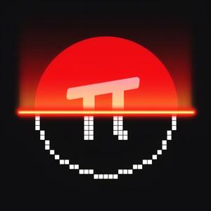
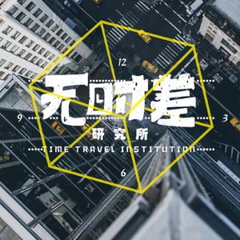

小宇宙是一款播客App，由即刻团队打造，提供契合中文播客听众的「发现」「收听」和「社区」体验。 用户可以通过这款软件发现喜欢的播客节目，发送弹幕和评论，找到品味相似的同好。这一直以来，精细搜索都是泛用型播客客户端的弱项， 人们熟悉的几款知名产品都各有不足——要么不能搜索单集，要么不能搜索中文。以往，人们收听和传播播客都以栏目为单位，但随着近两年来 中文播客的快速增长，走红的单集也越来越多，单集搜索能力就成了衡量播客客户端搜索能力的新指标。在这一点上，小宇宙自发布伊始就直接跻身第一梯队， 成为目前市面上搜索能力最强的播客客户端。
频道推荐--My favorites
 《一派·Podcast》是关注 「高效工作，品质生活」的少数派旗下的一档播客节目，他们希望在文字之外，用声音的方式和你产生更多交流。 他们会邀请各行各业的人来进行分享，如果你希望听到各个行业不为人知的心得和趣事，那么你一定不要错过这档节目。目前每月两更（实际上差不多三更）。
 《无时差研究所"Time Travel Institution"》 的主播是两位现居纽约的金融界从业人员，珂珂和艾谁谁。因为表达欲爆棚却懒得动笔，故创办了这档爆笑轻松的谈话类节目。 节目以访谈的形式进行，每期都会邀请一位嘉宾来分享一些你可能从没有听过但却很有意思的话题。希望成为你上下班路上，等地铁、公交， 打游戏，刷手机等等日常碎片化时间的一部分。